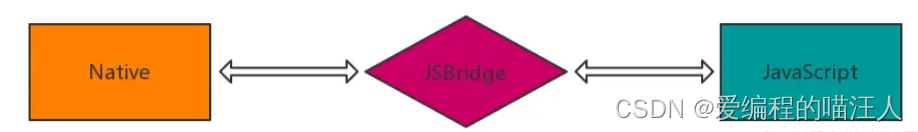
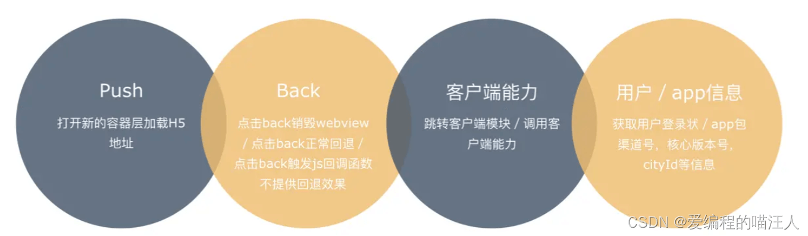
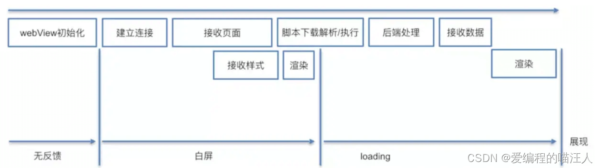
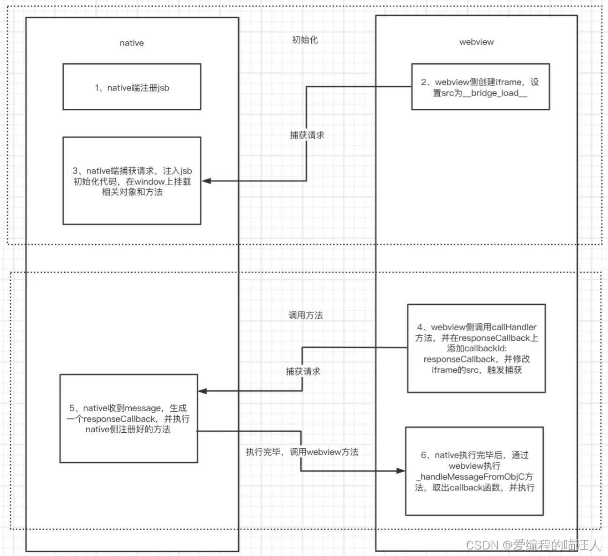
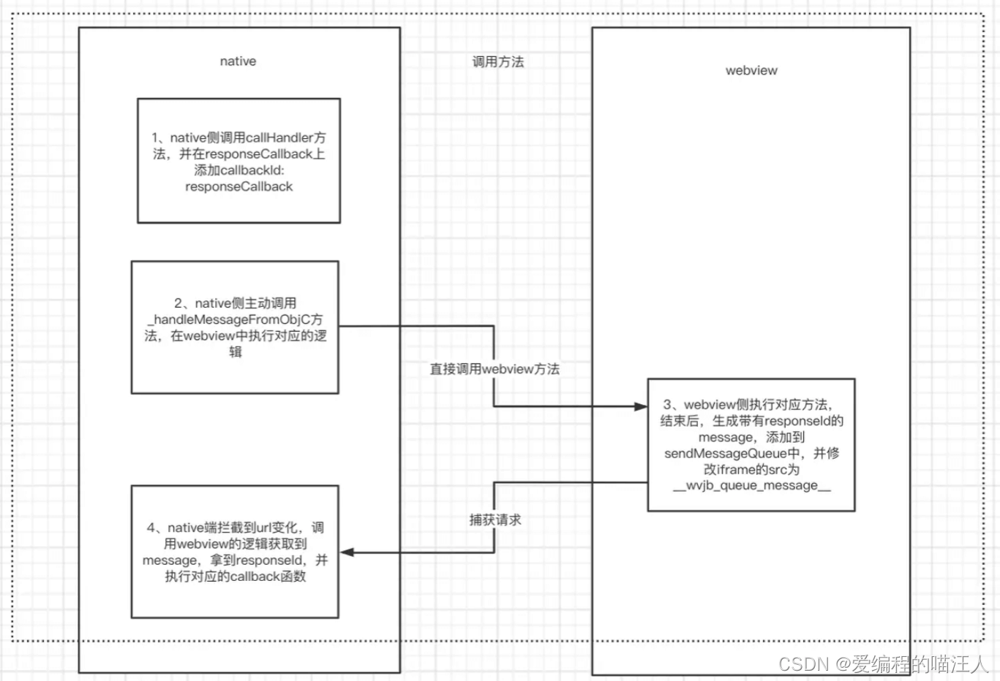

说说 jsBridge 的原理
参考答案
JSBridge是什么?
JSBridge：以 JavaScript 引擎或 Webview 容器作为媒介，通过协定协议进行通信，实现 Native 端和 Web 端双向通信的一种机制。

所谓 双向通信的通道:
- JS 向 Native 发送消息 : 调用相关功能、通知 Native 当前 JS 的相关状态等。
- Native 向 JS 发送消息 : 回溯调用结果、消息推送、通知 JS 当前 Native 的状态等。

JavaScript 是运行在一个单独的 JS Context 中（例如，WebView 的 Webkit 引擎、JSCore）。由于这些 Context 与原生运行环境的天然隔离，我们可以将这种情况与 RPC（Remote Procedure Call，远程过程调用）通信进行类比，将 Native 与 JavaScript 的每次互相调用看做一次 RPC 调用。如此一来我们可以按照通常的 RPC 方式来进行设计和实现。
Webview 是什么？
WebView 是移动端提供的运行JavaScript的环境，是系统渲染 Web 网页的一个控件，可与页面JavaScript交互，实现混合开发。
简单来说，WebView 是手机中内置了一款高性能 Webkit 内核浏览器，在 SDK 中封装的一个组件。不过没有提供地址栏和导航栏，只是单纯的展示一个网页界面。
WebView可以简单理解为页面里的iframe。原生app与WebView的交互可以简单看作是页面与页面内iframe页面进行的交互。就如页面与页面内的iframe共用一个Window一样，原生与WebView也共用了一套原生的方法。
其中 Android 和 iOS 又有些不同：
- Android目前是 基于
Chromium内核。 - iOS 目前采用的是
WKWebView。
WebView 可以对url请求、页面加载、渲染、页面交互进行强大的处理。

webview 去加载 url 并不像是 浏览器加载 url 的过程，webview 存在一个初始化的过程。为了提升init 时间，通常做法是 app 启动时初始化一个隐藏的webview等待使用，当用户点击需要加载URL，直接使用这个webview 来加载，从而减少webview init 初始化时间。弊端就是带来了额外的内存开销。
JSBridge 如何实现？
目前主流的 JSBridge实现中，都是通过拦截 URL 请求来达到 native 端和 webview 端相互通信的效果。
首先，需要在 webview 侧和 native 侧分别注册 bridge，其实就是用一个对象把所有函数储存起：
`1. function registerHandler(handlerName, handler) {
- messageHandlers[handlerName] = handler;
- }
`
然后，在 webview 里面注入初始化代码：
（1）创建一个名为 WVJBCallbacks 的数组，将传入的 callback 参数放到数组内
（2）创建一个 iframe，设置不可见，设置 src 为 https://__bridge_loaded__
（3）设置定时器移除这个 iframe。
最后，在native 端监听 url 请求：
（1）拦截了所有的 URL 请求并拿到 url。
（2）首先判断 isWebViewJavascriptBridgeURL，判断这个 url 是不是 webview 的 iframe 触发的，具体可以通过 host 去判断。
（3）继续判断，如果是 isBridgeLoadedURL，那么会执行 injectJavascriptFile方法，会向 webview 中再次注入一些逻辑，其中最重要的逻辑就是，在 window 对象上挂载一些全局变量和 WebViewJavascriptBridge属性。
（4）继续判断，如果是 isQueueMessageURL，那么这就是个处理消息的回调，需要执行一些消息处理的方法
1\. webview 调用 native 能力

- native 端注册 JsBridge。
- webview 侧创建 iframe，设置 src 为
__bridge_load__。 - native 端捕获请求，注入 jsb 初始化代码，在 window 上挂载相关对象和方法。
- webview 侧调用
callHandler方法，并在responseCallback上添加callbackId: responseCallback，并修改 iframe 的 src，触发捕获。 - native 收到 message，生成一个
responseCallback，并执行 native 侧注册好的方法 - native 执行完毕后，通过 webview 执行
_handleMessageFromObjC方法，取出 callback 函数，并执行。
2 . native 调用 webview 能力
native 可以直接调用 webview 注册的 JsBridge 方法，不需要通过触发 iframe 的 src 触发执行：

- native 侧调用
callHandler方法，并在responseCallback上添加callbackId: responseCallback。 - native 侧主动调用
_handleMessageFromObjC方法，在 webview 中执行对应的逻辑。 - webview 侧执行结束后，生成带有
responseId的 message，添加到sendMessageQueue中，并修改 iframe 的 src 为__wvjb_queue_message__。 - native 端拦截到 url 变化，调用 webview 的逻辑获取到 message，拿到
responseId，并执行对应的 callback 函数。
- JSBridge 是在 JavaScript 和原生代码之间进行通信的桥接机制，主要用于混合应用开发。
- 消息发送与接收：JavaScript 通过特定接口发送消息，原生代码接收并处理消息，然后返回结果。
- 接口定义：包括 JavaScript 端和原生端的接口定义，允许互相调用方法。
- 消息格式和协议：通常使用 JSON 格式传递消息，定义消息的请求和响应结构。
- 实现方式：在 Android 和 iOS 上分别通过不同的 API 实现 JavaScript 与原生代码的交互。
JSBridge 的实现可以根据具体的应用需求和平台特点进行调整，以实现高效的前后端通信。